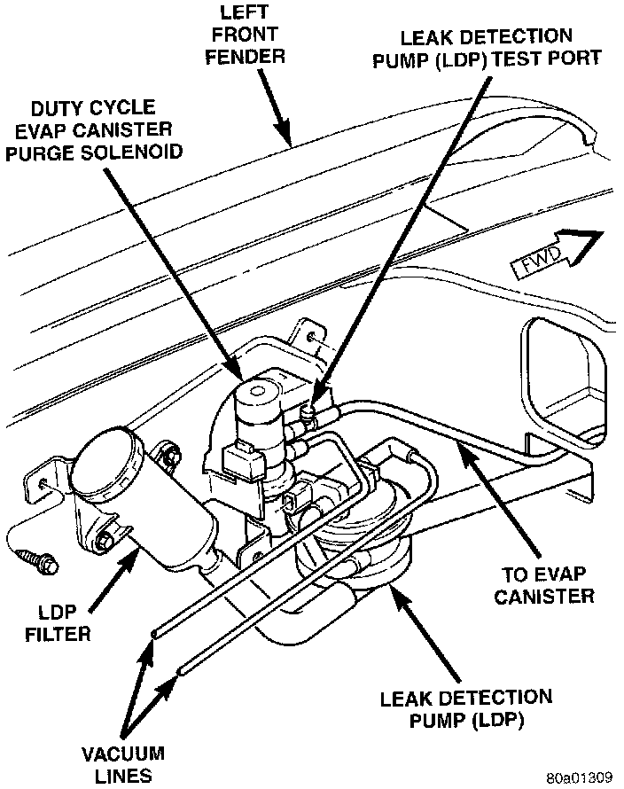

Leak Detection Solenoid: Service and Repair
Fig. 23 Leak Detection Pump (LDP) Location:

1. Remove air cleaner housing.
2. Carefully remove all vapor/vacuum lines at EVAP canister purge solenoid.
3. Remove EVAP canister purge solenoid.
4. Disconnect electrical connector at LDP.
5. Carefully remove vapor/vacuum lines at LDP.
6. Remove LDP mounting nuts/bolts.
7. Remove LDP from vehicle.
8. Reverse the removal procedures for installation. The vapor/vacuum lines must be firmly connected. Check the vapor/vacuum lines at both the LDP and EVAP canister solenoid for damage or leaks. If a leak is present, a Diagnostic trouble Code (DTC) may be set.